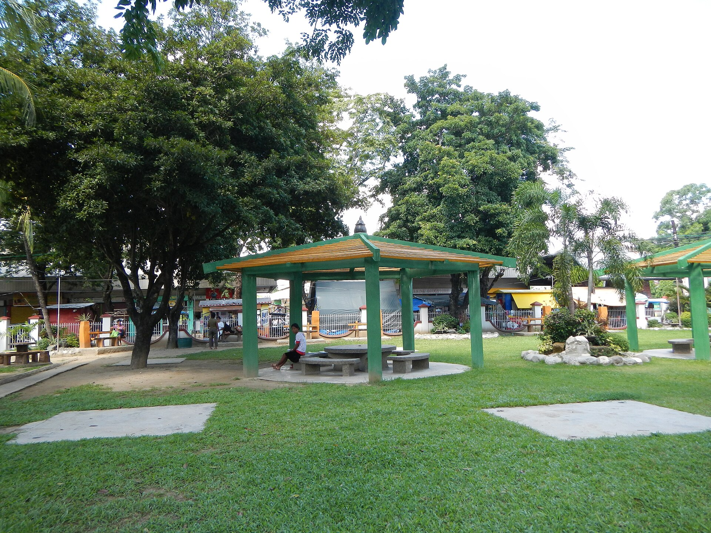
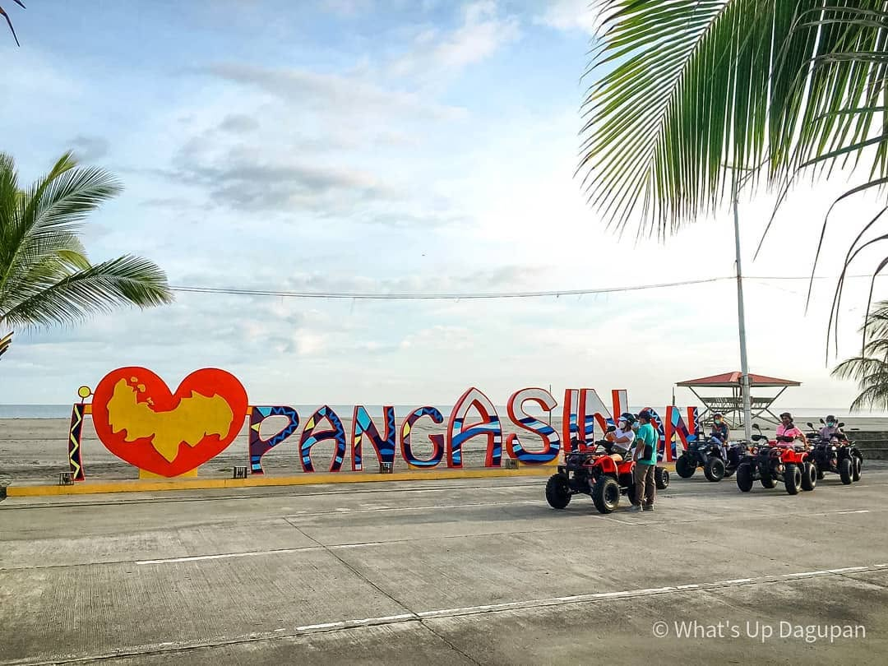
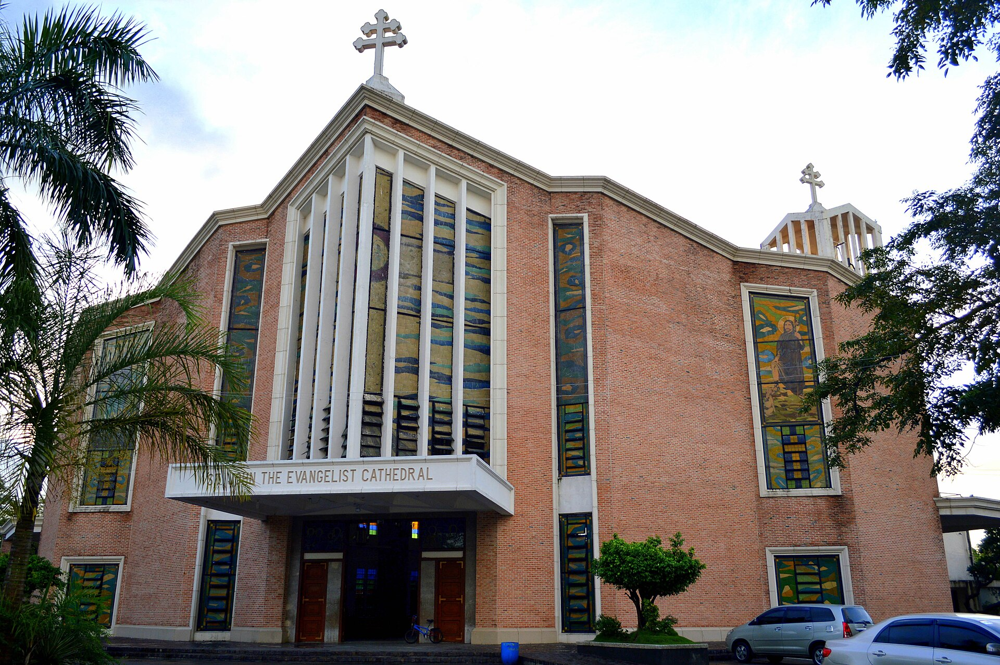

Natural Heritage
Natural HeritageAlaminos City
Hundred Islands
A celebrated national park of forested limestone islands rising from calm blue waters.
View location♡ A sweet Pangasinan adventure ♡
Pack your cutest bag and discover dreamy islands, lovely landmarks, and heartwarming local stories.
Places worth knowing
Search and explore heritage sites selected for their natural, historical, and cultural significance.
6 places
Natural HeritageAlaminos City
A celebrated national park of forested limestone islands rising from calm blue waters.
View location Historic Landmark
Historic LandmarkBolinao
A century-old lighthouse watching over Cape Bolinao and the western coastline.
View location
Natural HeritageBalungao
A mountain retreat known for its warm springs, green slopes, and wide provincial views.
View location Sacred Heritage
Sacred HeritageManaoag
A major pilgrimage church and an enduring center of devotion in Northern Luzon.
View location
Coastal HeritageLingayen
A broad and historic gulf where fishing communities, sunsets, and memory meet.
View location
Built HeritageDagupan City
A city landmark reflecting Pangasinan's long religious and architectural history.
View locationMore than a destination
Pangasinan is a province of remarkable beauty, where golden beaches, towering lighthouses, historic churches, and peaceful hot springs create a diverse collection of unforgettable experiences.